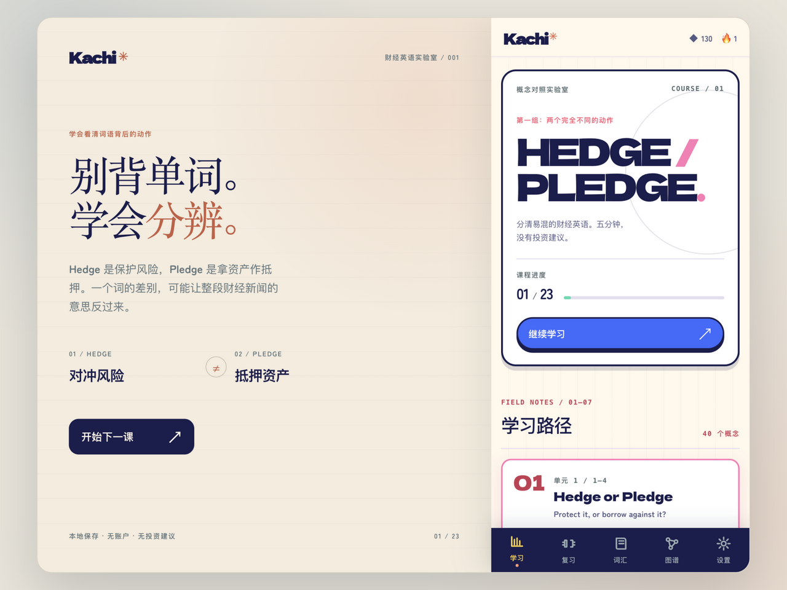
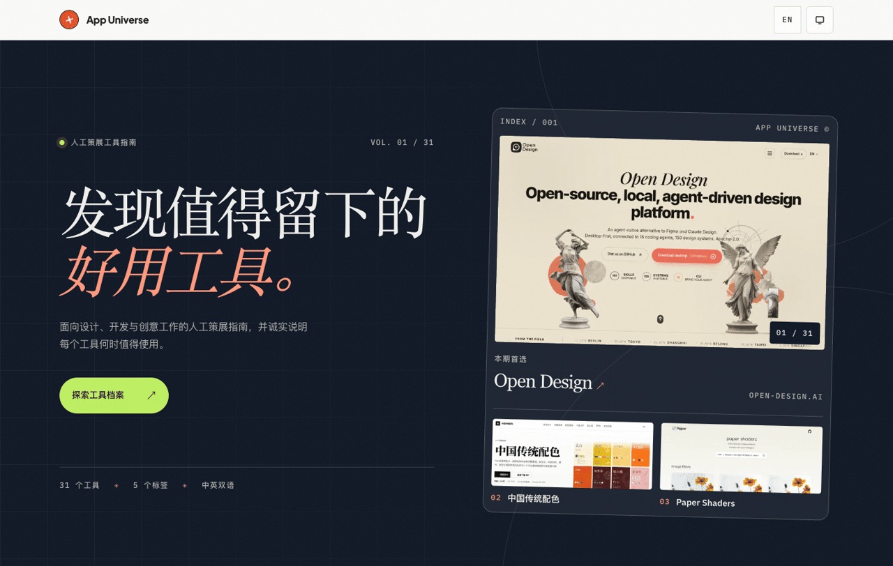

cookabc / local observatory
Small tools.Closely observed.
An independent practice in local-first software, careful interfaces, and the useful details in between.
Make the invisible
legible.
MAC / CODING AGENTS / BROWSER / EDITOR
Selected instruments by cookabc
Selected instruments by cookabc
01 / instantaneous states
Observe.
A signal you can read at a glance. A frame you can choose with intention.
Vitals / AI Toolbox / Framelet
Native Mac tools for the system's pulse, your AI usage, and the moment worth keeping.
02 / accumulated traces
Record.
What your tools leave behind deserves the same care as what they show.

Agent Inspector
Five coding agents, their local files and sessions, made inspectable before a single thing is deleted.
03 / a clearer picture
Understand.
Less noise. Better distinctions. Experiences that leave room for thought.

